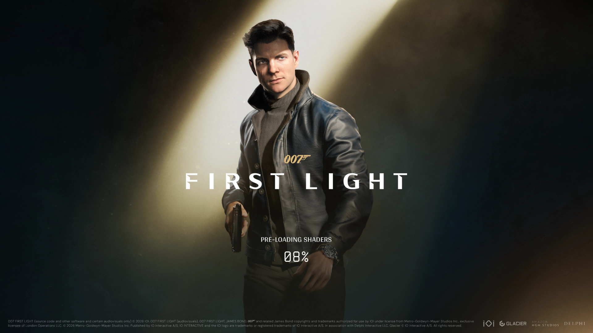
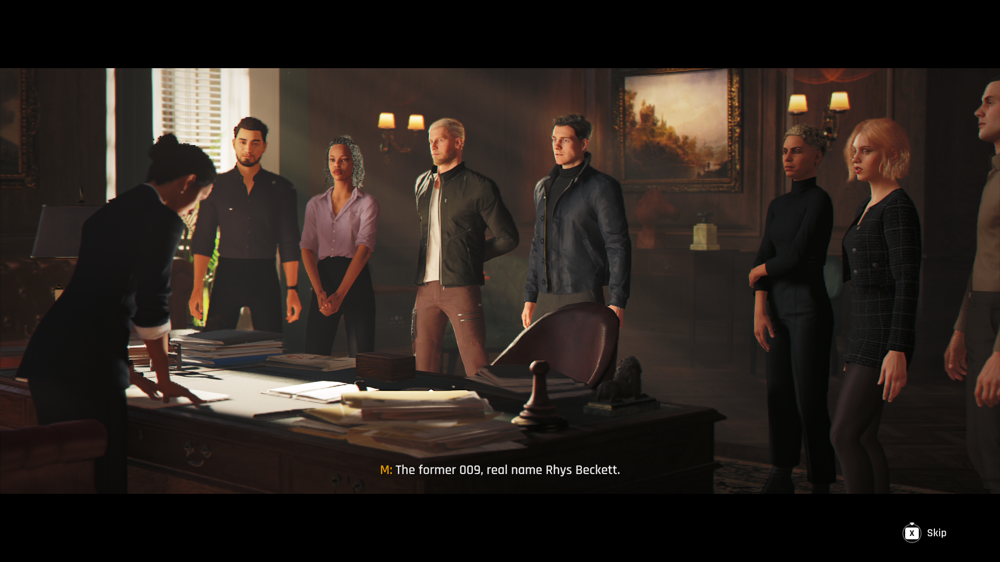
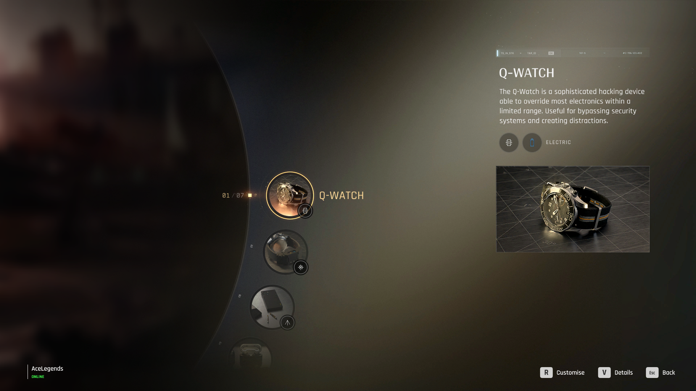
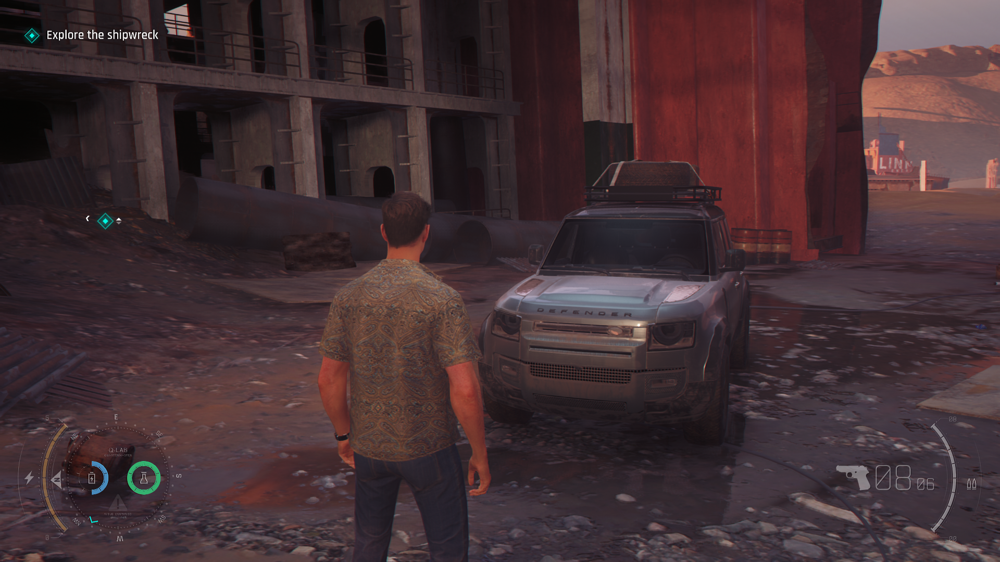

007 First Light
Mengikuti perjalanan James Bond menjadi agen MI6, dari presentasi spionase hingga pengalaman stealth dan aksi.

007 First Light mengangkat kisah asal-usul James Bond melalui petualangan aksi dan spionase yang berdiri sendiri. Permainan ini tidak hanya berpusat pada baku tembak, tetapi juga memperkenalkan proses Bond dalam menghadapi situasi berbahaya, mengumpulkan informasi, dan memanfaatkan perlengkapan untuk menyelesaikan misi. Perpaduan tersebut menjadi dasar menarik untuk melihat bagaimana identitas seorang agen rahasia dibangun melalui gameplay maupun narasi.
01. Presentasi dan Penceritaan

Presentasi merupakan bagian penting dalam game bertema James Bond karena permainan perlu menyeimbangkan ketegangan misi rahasia dengan penyajian cerita yang sinematik. Sebagai kisah asal-usul Bond, 007 First Light memiliki ruang untuk memperlihatkan bagaimana seorang rekrutan muda mulai beradaptasi dengan dunia intelijen, menghadapi tekanan, dan mengambil keputusan dalam situasi yang tidak selalu berjalan sesuai rencana.
Selain adegan sinematik, penyampaian informasi melalui dialog, percakapan yang dapat disimak, dan petunjuk lingkungan menjadi aspek menarik untuk diperhatikan. Informasi yang diperoleh pemain dapat membuat proses infiltrasi terasa lebih masuk akal dibandingkan sekadar mengikuti penanda objektif. Di sisi lain, hubungan antara cerita utama dan aktivitas pemain juga penting agar misi tidak terasa seperti rangkaian aksi yang terpisah dari perkembangan karakter.
Saat memainkan game ini, perhatikan apakah transisi antara cutscene dan gameplay terasa mulus, apakah dialog membantu membangun karakter, serta apakah tempo penceritaan mampu menjaga ketertarikan. Bagian ini juga bisa digunakan untuk membahas adegan yang paling berkesan, karakter yang menarik perhatian, atau bagian cerita yang menurutmu terlalu panjang maupun kurang dikembangkan.
02. Grafis dan Visual
Pada game spionase, kualitas visual tidak hanya berfungsi untuk membuat karakter dan lingkungan terlihat menarik. Tata ruang, pencahayaan, detail objek, serta animasi juga membantu membangun suasana operasi rahasia. Pemain perlu dapat mengenali lokasi yang aman, memperhatikan penjagaan musuh, dan menemukan benda atau perangkat yang berpotensi digunakan selama misi.
Variasi lingkungan menjadi aspek lain yang layak diperhatikan. Perbedaan suasana antara fasilitas modern, lokasi infiltrasi, dan area terbuka dapat memberikan karakter tersendiri pada tiap misi. Detail lingkungan yang baik juga dapat membantu pemain membaca situasi tanpa harus selalu mengandalkan petunjuk berupa teks di layar.
Dalam pengalaman bermainmu, perhatikan kualitas pencahayaan, tekstur, animasi wajah dan tubuh, serta detail perlengkapan Bond. Apakah visual tetap jelas ketika kamera bergerak cepat atau pertempuran berlangsung? Apakah ekspresi karakter mendukung adegan emosional? Kamu juga dapat menambahkan pengamatan mengenai performa, kestabilan frame rate, atau gangguan visual jika memang mengalaminya.
03. Suara dan Musik

Desain audio berperan besar dalam menciptakan suasana spionase. Percakapan yang terdengar dari kejauhan, langkah kaki, suara perangkat elektronik, dan bunyi lingkungan dapat memberikan informasi yang membantu pemain menentukan langkah berikutnya. Dalam situasi seperti ini, audio bukan sekadar hiasan, melainkan bagian dari cara pemain memahami keadaan di sekitarnya.
Efek suara senjata, gadget, dan pertarungan jarak dekat juga perlu terasa sesuai dengan tindakan yang dilakukan. Sementara itu, musik latar dapat memperkuat perbedaan suasana antara fase penyusupan yang penuh kehati-hatian dan adegan aksi yang lebih intens. Keseimbangan antara dialog, efek suara, dan musik penting agar informasi penting tetap terdengar jelas.
Untuk analisis pribadimu, perhatikan apakah voice acting terasa meyakinkan, apakah suara gadget mudah dikenali, serta apakah musik mampu meningkatkan ketegangan tanpa terlalu mendominasi permainan. Kamu juga bisa membahas musik yang paling membekas setelah memainkan misi tertentu, termasuk apakah perubahan soundtrack selaras dengan kejadian di layar.
04. Gameplay dan Mekanik Spionase

Salah satu fokus utama 007 First Light adalah memberikan beberapa pendekatan untuk menghadapi tujuan misi. Pemain dapat mengutamakan stealth, mengamati situasi, mengumpulkan informasi, memanfaatkan gadget, atau beralih ke aksi langsung ketika penyusupan tidak lagi berjalan sesuai rencana. Fleksibilitas ini menjadi bagian penting dari fantasi menjadi agen rahasia, karena pemain tidak selalu harus menyelesaikan masalah melalui baku tembak.
Elemen Spycraft mendorong pemain untuk memperhatikan lingkungan dan mencari peluang sebelum bertindak. Bond's Instinct menambahkan pilihan untuk memancing perhatian, melakukan bluff ketika dicurigai, atau membantu konsentrasi dalam situasi tertentu. Sementara itu, gadget dari Q Branch dapat membuka alternatif untuk mengalihkan penjagaan, berinteraksi dengan perangkat, maupun menghadapi ancaman. Kombinasi mekanik tersebut berpotensi membuat pemain merasa sedang mencari solusi, bukan hanya mengikuti satu urutan tindakan yang sudah ditentukan.
Di sisi aksi, pertarungan jarak dekat dan penggunaan senjata memberikan pilihan ketika situasi berubah menjadi konfrontasi. Namun, keberhasilan desain ini bergantung pada respons kontrol, perilaku musuh, keterbacaan situasi, dan seberapa baik setiap pilihan benar-benar berguna saat dimainkan. Banyaknya gadget belum tentu otomatis membuat gameplay mendalam jika penggunaannya terasa berulang atau tidak memberi dampak berarti.
Berdasarkan pengalamanmu sendiri, bahas apakah sistem stealth terasa memuaskan, seberapa responsif kontrol saat pertarungan, dan apakah gadget benar-benar membantu menyelesaikan masalah. Kamu juga bisa menilai kecerdasan musuh, kebebasan memilih rute, variasi misi, serta apakah permainan terlalu sering memaksa pemain mengikuti pendekatan tertentu.
Terakhir, perhatikan keseimbangan antara stealth dan aksi. Apakah kedua pendekatan terasa sama-sama layak digunakan? Apakah perubahan dari penyusupan menuju baku tembak berlangsung alami? Jawaban atas pertanyaan tersebut akan membantu menjelaskan apakah gameplay berhasil menangkap fantasi menjadi agen rahasia atau justru terasa seperti game aksi biasa dengan tambahan gadget.
The Verdict
"Sebuah petualangan spionase yang memadukan stealth, aksi, dan penggunaan gadget untuk menghadirkan fantasi menjadi agen rahasia. Daya tarik utamanya terletak pada bagaimana pemain membaca situasi dan menentukan cara menghadapi misi. Kualitas akhir pengalaman ini tetap bergantung pada konsistensi desain misi, respons kontrol, dan keberhasilan menggabungkan aksi dengan penyusupan."
Skor dan kesimpulan merupakan penilaian pribadi penulis.